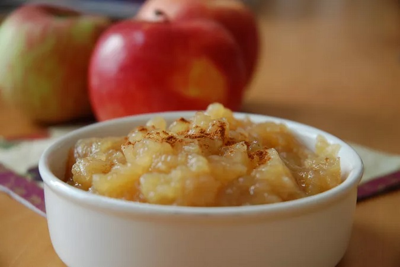

Applesauce

Description
Making applesauce at home is easier than you think.
In this post you will learn how to prepare a delicious applesauce at home.
Ingredients
- Apples
- Water
- Sugar
- Cinnamon
Steps
- Combine apples, water, sugar, and cinnamon in a saucepan; cover and cook over medium heat until apples are soft, about 15 to 20 minutes.
- Allow apple mixture to cool, then mash with a fork or potato masher until it is the consistency you like.